העדות מתרחקת
הדור שפגש ניצולים פנים אל פנים הולך ומתמעט, והמפגש הישיר עם העדות הופך נדיר.
דף עד מארכיון יד ושם, מוצג להמחשה בהסכמת המשפחה.
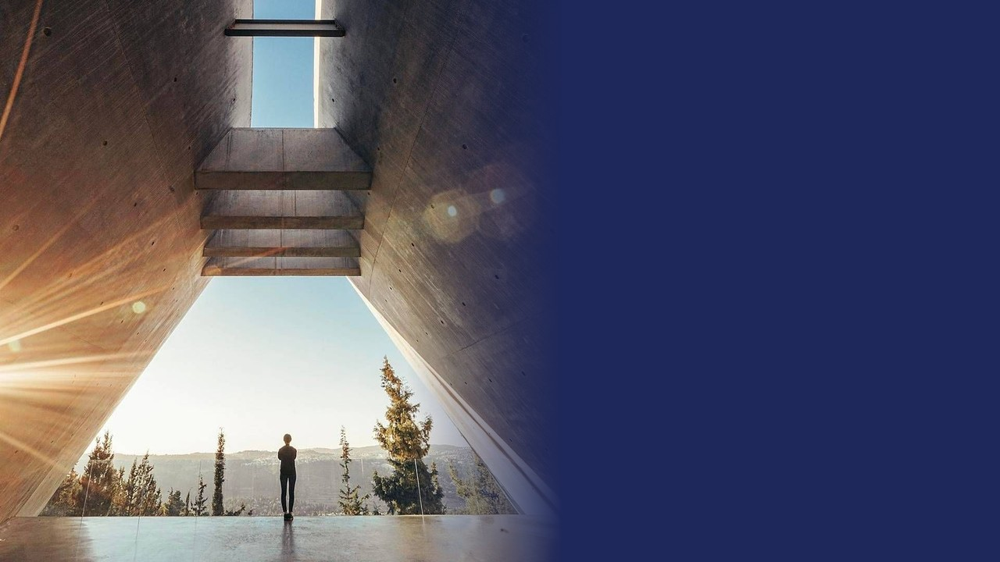
הדור שפגש ניצולים פנים אל פנים הולך ומתמעט, והמפגש הישיר עם העדות הופך נדיר.
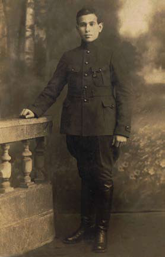
זיכרון נשמר כאשר אדם פוגש שם, פנים, סיפור ומקום, ומרגיש שהם נוגעים גם בו.
שם הוא מגלה, לומד ומעצב את תפיסת עולמו. כדי שהזיכרון ימשיך לחיות, הוא צריך לדבר גם בשפה הזאת.
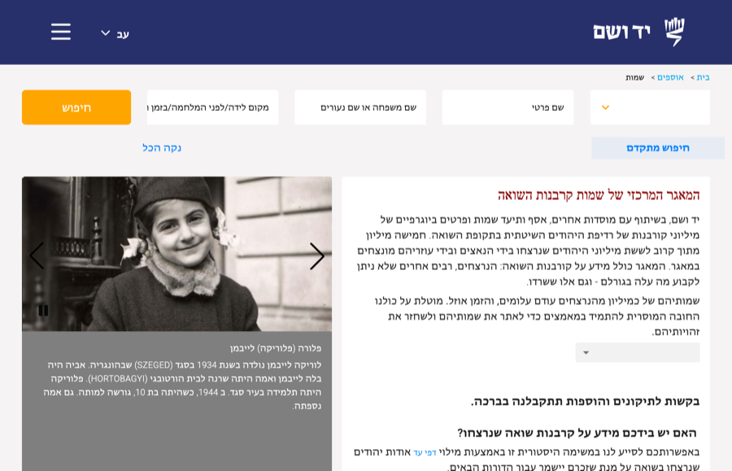
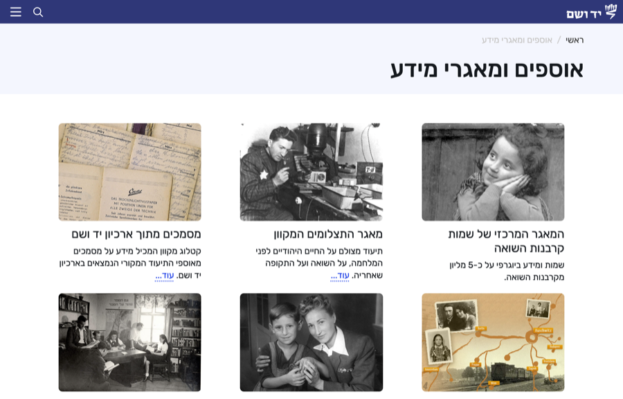
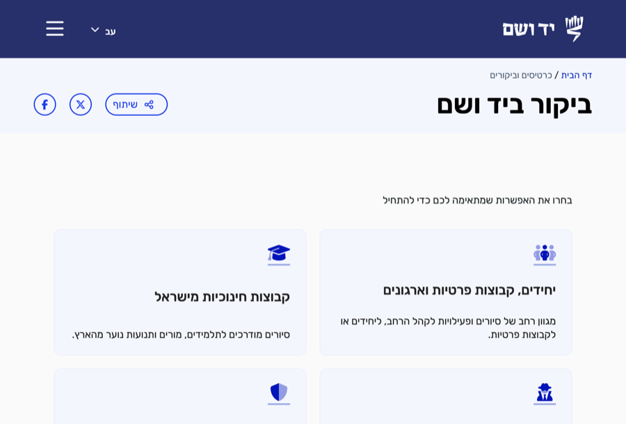
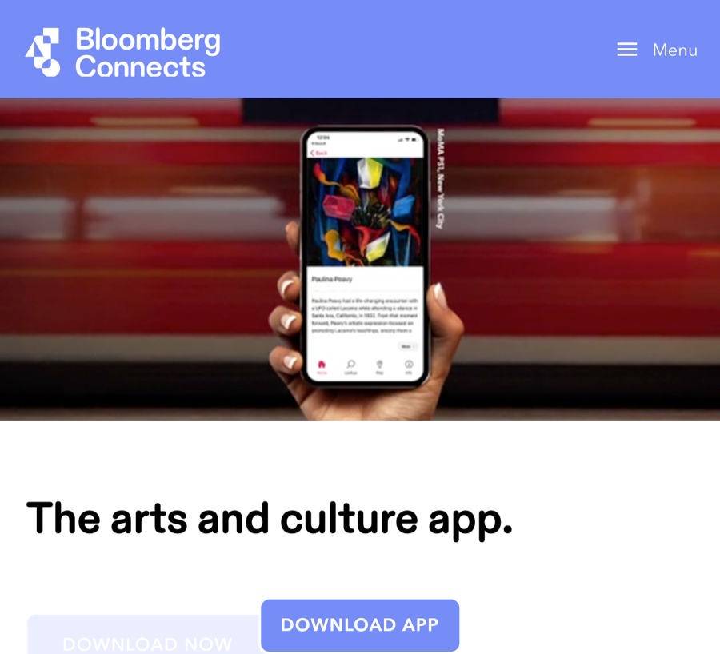
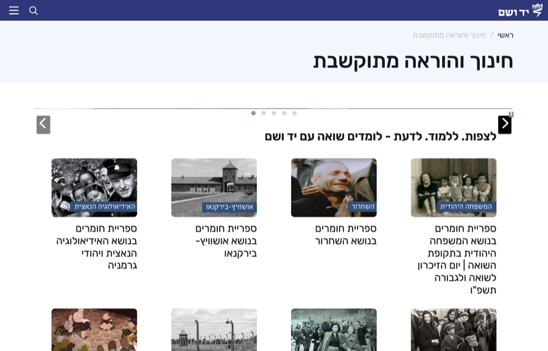
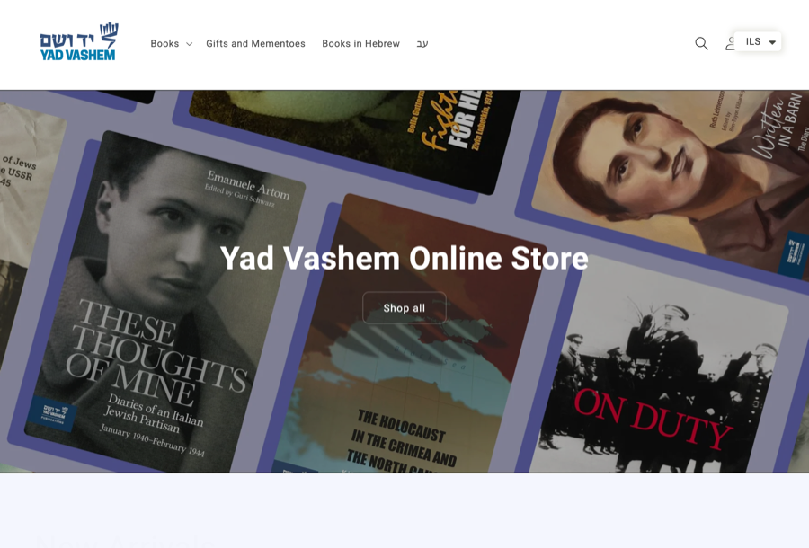

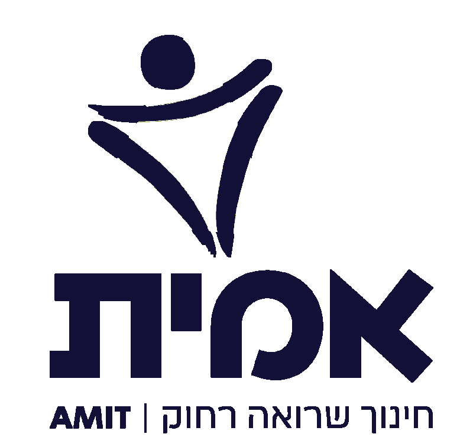


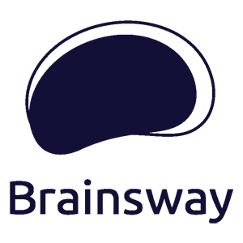


אתר מלא ואפליקציה עם מפה אינטראקטיבית של השטח, ומיקום המבקר עליה, עדכונים ואירועים. אתר ביקור ירושלמי, מתחם פתוח, ואותו אתגר בדיוק: אדם שעומד במקום מסוים וצריך לדעת מה כאן ולאן ממשיכים.
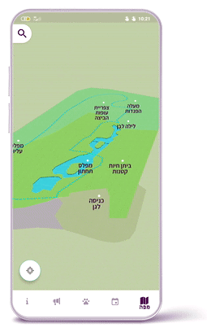
מערכת למידה לרשת חינוך ארצית: עורך שיעורים למורה, מסלולי למידה, מעקב התקדמות אישי ודשבורדים למורים ולתלמידים.
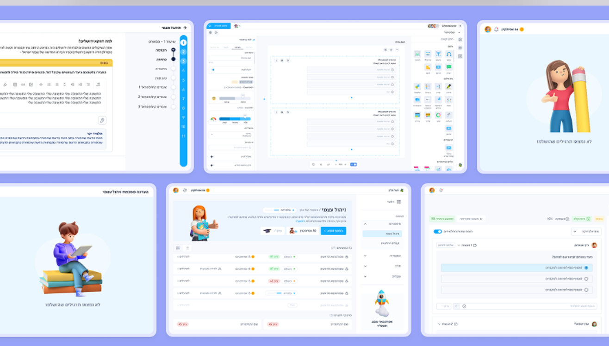
פלטפורמה שמחברת תומכים יהודים בעולם לאנשים בישראל, דרך סיפור אישי של אדם אחד עם שם ופנים. גיוס, תשלומים, מעקב, ושתי שפות.

תהליך Discovery משותף